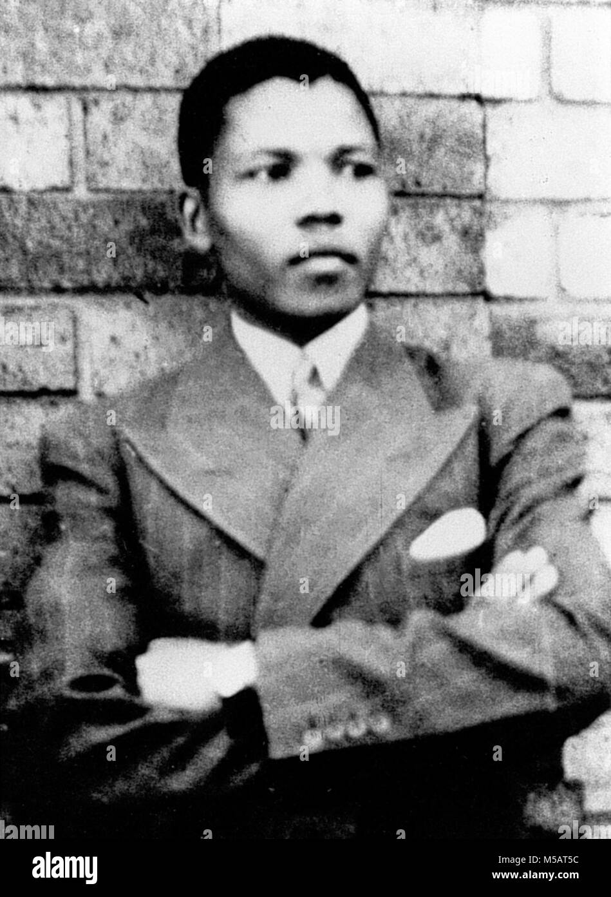
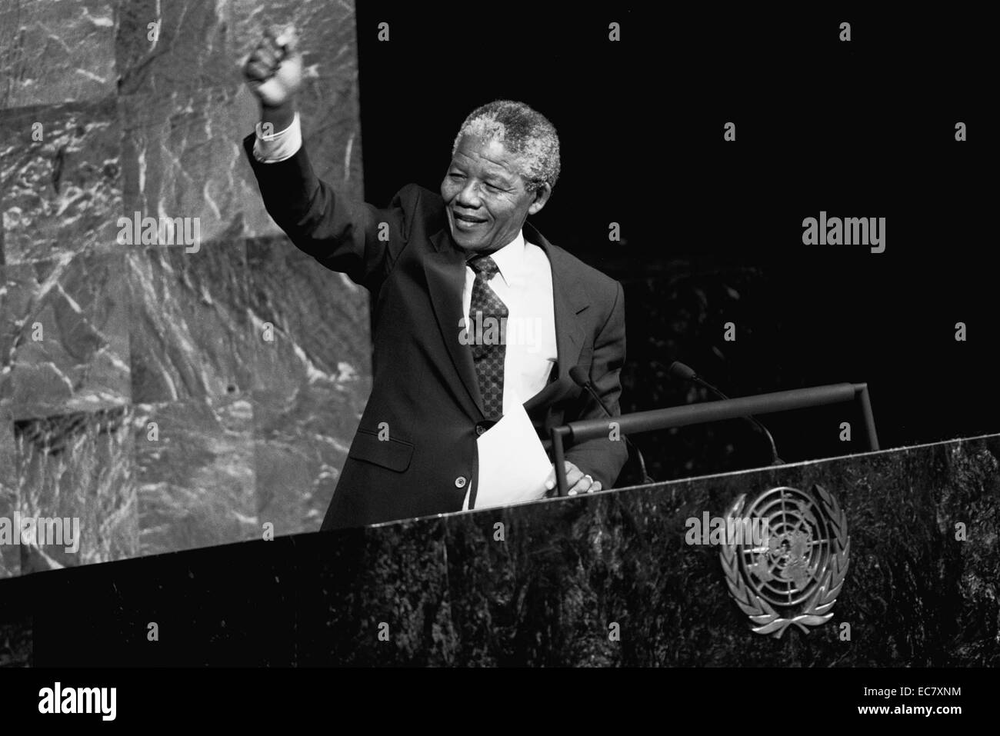

Rolihlahla Mandela was born into the Madiba clan in the village of Mvezo, in the Eastern Cape, on 18 July 1918. His mother was Nonqaphi Nosekeni and his father was Nkosi Mphakanyiswa Gadla Mandela, principal counsellor to the Acting King of the Thembu people, Jongintaba Dalindyebo. In 1930, when he was 12 years old, his father died and the young Rolihlahla became a ward of Jongintaba at the Great Place in Mqhekezweni1. Hearing the elders’ stories of his ancestors’ valour during the wars of resistance, he dreamed also of making his own contribution to the freedom struggle of his people.
He attended primary school in Qunu where his teacher, Miss Mdingane, gave him the name Nelson, in accordance with the custom of giving all schoolchildren “Christian” names. He completed his Junior Certificate at Clarkebury Boarding Institute and went on to Healdtown, a Wesleyan secondary school of some repute, where he matriculated. Mandela began his studies for a Bachelor of Arts degree at the University College of Fort Hare but did not complete the degree there as he was expelled for joining in a student protest.
Mandela, while increasingly politically involved from 1942, only joined the African National Congress in 1944 when he helped to form the ANC Youth League (ANCYL). In 1944 he married Walter Sisulu’s cousin, Evelyn Mase, a nurse. They had two sons, Madiba Thembekile "Thembi" and Makgatho, and two daughters both called Makaziwe, the first of whom died in infancy. He and his wife divorced in 1958.
In 1952 he was chosen as the National Volunteer-in-Chief of the Defiance Campaign with Maulvi Cachalia as his deputy. This campaign of civil disobedience against six unjust laws was a joint programme between the ANC and the South African Indian Congress. He and 19 others were charged under the Suppression of Communism Act for their part in the campaign and sentenced to nine months of hard labour, suspended for two years. A two-year diploma in law on top of his BA allowed Mandela to practise law, and in August 1952 he and Oliver Tambo established South Africa’s first black-owned law firm in the 1950s, Mandela & Tambo.2 At the end of 1952 he was banned for the first time. As a restricted person he was only permitted to watch in secret as the Freedom Charter was adopted in Kliptown on 26 June 1955.Mandela was arrested in a countrywide police swoop on 5 December 1956, which led to the 1956 Treason Trial. Men and women of all races found themselves in the dock in the marathon trial that only ended when the last 28 accused, including Mandela, were acquitted on 29 March 1961. On 21 March 1960 police killed 69 unarmed people in a protest in Sharpeville against the pass laws. This led to the country’s first state of emergency and the banning of the ANC and the Pan Africanist Congress (PAC) on 8 April. Mandela and his colleagues in the Treason Trial were among thousands detained during the state of emergency. During the trial Mandela married a social worker, Winnie Madikizela, on 14 June 1958. They had two daughters, Zenani and Zindziswa. The couple divorced in 1996. On 11 January 1962, using the adopted name David Motsamayi, Mandela secretly left South Africa. He travelled around Africa and visited England to gain support for the armed struggle. He received military training in Morocco and Ethiopia and returned to South Africa in July 1962. He was arrested in a police roadblock outside Howick on 5 August while returning from KwaZulu-Natal, where he had briefed ANC President Chief Albert Luthuli about his trip. He was charged with leaving the country without a permit and inciting workers to strike. He was convicted and sentenced to five years' imprisonment, which he began serving at the Pretoria Local Prison. On 27 May 1963 he was transferred to Robben Island and returned to Pretoria on 12 June. Within a month police raided Liliesleaf, a secret hideout in Rivonia, Johannesburg, used by ANC and Communist Party activists, and several of his comrades were arrested.
On 12 August 1988 he was taken to hospital where he was diagnosed with tuberculosis. After more than three months in two hospitals he was transferred on 7 December 1988 to a house at Victor Verster Prison near Paarl where he spent his last 14 months of imprisonment. He was released from its gates on Sunday 11 February 1990, nine days after the unbanning of the ANC and the PAC and nearly four months after the release of his remaining Rivonia comrades. Throughout his imprisonment he had rejected at least three conditional offers of release.
On 10 May 1994 he was inaugurated as South Africa’s first democratically elected President. On his 80th birthday in 1998 he married Graça Machel, his third wife. True to his promise, Mandela stepped down in 1999 after one term as President. He continued to work with the Nelson Mandela Children’s Fund he set up in 1995 and established the Nelson Mandela Foundation and The Mandela Rhodes Foundation.
